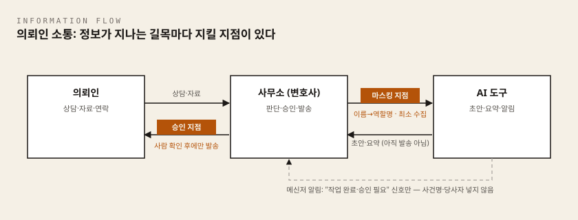

- 핵심 질문: 편리한 자동화가 신뢰와 비밀을 해치지 않게 하려면?
- 이 차시의 결과물: 안전한 소통 시나리오 1건
이 차시에서 준비할 것
시작 전에 아래 네 가지를 확인하시기 바랍니다. 설치가 필요한 항목은 링크의 설치가이드를 먼저 보고 오시면 됩니다. 설치가 안 되어 있어도 교재 부분과 실습지(앞부분)는 종이와 펜만으로 진행할 수 있습니다.
| 준비물 | 30초 확인법 | 없거나 안 되면 |
|---|---|---|
| 실습 폴더와 글 쓰는 프로그램 | 바탕 화면에 AX실습 폴더가 보이고, 그 안에 새 문서를 만들 수 있다 | 공통 준비 설치가이드 |
| AI 채팅 도구 1개 (권장: 안티그래비티) | 도구를 열었을 때 — 파이(Pi)는 PowerShell에서 pi를 실행한 뒤 — 글을 입력하는 칸이 보인다 | 안티그래비티 설치가이드, 터미널이 익숙한 분만 파이(Pi) 설치가이드 |
| 헤르메스(Hermes) — 4단계 알림 설계에만 사용 | 2차시에서 시연으로 보았거나 선택 설치한 도구. 미설치여도 이번 차시는 "설계"만 하므로 진행 가능 | 헤르메스 설치가이드 |
| (선택) korean-law-mcp | 회신 초안에 법령 조문이 등장할 때 원문 확인용 | korean-law-mcp 설치가이드, 사용법은 4차시 「LAB 3. korean-law-mcp로 공식 데이터에서 검증하기」 |
이전 차시에서 가져올 것
- 5차시에서 정한 승인 관문 원칙 — "밖으로 나가는 것은 반드시 사람이 승인한다".
- 미리 생각해 오기로 한 "내 업무에서 의뢰인과 닿는 소통 장면 하나".
복사·붙여넣기 방법 (이 차시 내내 씁니다)
- 코드 블록의 글을 마우스로 끌어 선택 →
Ctrl+C(복사) → AI 입력창에서Ctrl+V(붙여넣기). - (macOS:
Cmd+C/Cmd+V)
이 차시에서 처음 나오는 말
- AI 채팅 도구: 사람이 글로 질문하면 AI가 글로 답하는 프로그램입니다. 이 차시는 안티그래비티를 권장합니다. 바탕 화면 아이콘을 두 번 눌러 바로 열리고, 화면 아래 입력 칸에 글을 붙여 넣으면 되기 때문입니다. 파이(Pi)는 PowerShell(글자로 컴퓨터에 명령을 내리는 창) 안에서 실행하는 터미널 AI 도구라, 터미널이 익숙한 분만 쓰시기 바랍니다.
- 프롬프트(prompt): AI에게 주는 지시문입니다. 이 문서의 회색 코드 블록에 들어 있는 글이 프롬프트이며, 그대로 복사해서 붙여 넣으면 됩니다.
- 접점: 의뢰인과 말이나 글이 오가는 장면을 뜻합니다. 상담 접수 안내, 진행 상황 알림, 자료 요청, 후속 연락이 대표적입니다.
- 비밀유지의무: 업무상 알게 된 의뢰인의 비밀을 정당한 이유 없이 공개하거나 이용하지 않을 의무입니다(변호사법 제26조, 변호사윤리장전).
- 개인정보: 이름만이 아니라 사건번호, 연락처, 가족관계처럼 다른 정보와 결합해 개인을 알아볼 수 있는 정보 전부를 말합니다.
- 마스킹(masking): 식별정보를 가리거나 역할명·코드로 바꾸는 실무 동작의 이름입니다. 예:
김○○→의뢰인(임차인). - 비식별화: 개인을 알아볼 수 없게 만드는 여러 조치를 넓게 부르는 기술·실무 용어입니다. 법정 용어가 아닙니다.
- 가명처리: 개인정보 보호법에 정의된 법정 개념입니다. 법적 효과가 따라붙으므로 정확한 의미로만 씁니다.
- 재식별: 이름을 지웠는데도 남은 정보의 조합(지역 + 직업 + 사건 유형 등)만으로 누구인지 다시 알아맞힐 수 있게 되는 것을 말합니다.
- 처리 목적: 정보를 왜, 어디까지 사용할지 미리 특정해 둔 범위입니다.
- 최소 수집: 정해진 목적에 필요한 범위에서만 정보를 수집하고 사용하는 원칙입니다.
- 트리거(trigger): 어떤 흐름이 시작되는 신호입니다. 예: 사건 단계가 바뀌는 순간, 의뢰인 문의가 접수되는 순간.
- 에이전트(agent): 지시를 받아 여러 단계를 스스로 이어서 처리하는 AI 프로그램입니다. 2차시에서 시연으로 본 헤르메스가 그 예입니다.
이 차시에서 배우는 것
의뢰인이 사무소를 경험하는 통로는 서면이 아니라 연락입니다. 상담 접수 안내, 진행 상황 알림, 자료 요청, 후속 연락은 반복 빈도가 높아 자동화 효과가 큽니다. 동시에 의뢰인의 이름과 사건 내용이 외부 시스템을 오가는 구간이기도 합니다.
지금까지의 차시가 자료를 다루는 안쪽 작업이었다면, 이번 차시는 정보가 사무소 바깥으로 나가는 접점을 다룹니다. 여기서의 실수는 되돌리기 어렵습니다. 잘못 발송된 안내문은 회수할 수 없고, 새어 나간 사건 정보는 비밀유지의무 위반과 신뢰 상실로 이어질 수 있습니다.
그래서 이번 차시는 자동화의 속도가 아니라 자동 초안의 범위, 입력 전 마스킹, 발송 전 사람 승인을 먼저 설계합니다.
이 차시를 마치면 다음을 할 수 있습니다.
- 의뢰인 접점 업무에서 자동 초안에 맡길 구간과 사람이 승인할 구간을 구분합니다.
- 마스킹, 처리 목적 분리, 최소 수집 원칙으로 AI에 입력할 정보의 범위를 정합니다.
- 하나의 의뢰인 접점에 대해 트리거부터 기록까지 갖춘 안전한 소통 시나리오를 표로 설계합니다.
이번 차시에서 다루는 의뢰인 접점은 네 가지입니다.
| 접점 | 반복 내용 | 자동화하고 싶은 부분 |
|---|---|---|
| 상담 접수 안내 | 접수 확인, 준비 서류, 상담 일정 | 접수 즉시 안내문 초안 |
| 진행 상황 알림 | 절차 단계 변경, 기일 안내 | 단계 변경 시 알림 초안 |
| 자료 요청 | 필요 서류 목록, 제출 방법, 기한 | 사건 유형별 요청문 초안 |
| 후속 연락 | 미회신 확인, 종결 후 안내 | 일정 기준 리마인드 초안 |
네 접점 모두 절차와 형식이 정해져 있어 자동화 후보에 가깝습니다. 그러나 수신자가 의뢰인이라는 점에서, 내부 자료 정리와는 다른 기준이 필요합니다. 이번 차시의 질문은 "자동화할 수 있는가"가 아니라 "어디까지 자동으로 두어도 신뢰가 지켜지는가"입니다.
개념 익히기
의뢰인 접점 자동화를 설계하기 전에, 다섯 가지 개념을 먼저 정리합니다. 모두 정보가 사무소 밖으로 나가는 과정을 안전하게 다루는 데 필요한 개념입니다.
비밀유지의무
비밀유지의무는 업무상 알게 된 의뢰인의 비밀을 정당한 이유 없이 공개하거나 이용하지 않을 의무입니다(근거: 변호사법 제26조, 변호사윤리장전의 비밀유지 조항). 서면에만 적용되는 것이 아니라 안내 문자 한 줄, 알림 한 건에도 적용됩니다.
편의상 쓰는 외부 AI 서비스와 메신저도 정보가 전달되는 제3자 시스템일 수 있습니다. 그래서 의뢰인 접점 자동화에서는 이 의무를 다시 살펴야 합니다.
용어 정리: 마스킹, 비식별화, 가명처리
세 용어는 무게가 다릅니다. 층위를 구분해서 씁니다.
- 가명처리는 개인정보 보호법에 정의된 법정 개념입니다. 추가 정보 없이는 특정 개인을 알아볼 수 없도록 개인정보를 처리하는 것을 말하며, 법적 효과(가명정보 특례)가 따라붙는 용어이므로 정확한 의미로만 씁니다.
- 비식별화는 법정 용어가 아니라 기술·실무 용어입니다. 개인을 알아볼 수 없게 만드는 여러 조치를 넓게 부르는 말이라, 법률 문서에서 가명처리와 섞어 쓰면 개념 충돌이 생깁니다.
- 마스킹은 이 과정이 쓰는 실무 동작의 이름입니다. 식별정보를 가리거나 역할명·코드로 대체하는 행위 자체를 가리킵니다(원칙 1 "입력 전 마스킹").
정리하면, 실습에서 손을 움직이는 동작은 "마스킹", 기술 문서의 넓은 범주는 "비식별화", 법적 효과를 말할 때만 "가명처리"입니다. 마스킹을 했다고 해서 법령상 가명처리 요건을 충족했다고 단정하지 않습니다. 이 구분 자체가 변호사가 AI 실무 용어를 다룰 때 지켜야 할 정밀함입니다.
개인정보
개인정보는 이름만이 아닙니다. 사건번호, 연락처, 가족관계, 구체적 사실관계처럼 다른 정보와 결합해 개인을 알아볼 수 있는 정보가 모두 포함됩니다.
이름을 지웠다고 항상 안전해지는 것도 아닙니다. 남은 사실관계의 조합만으로 누구인지 드러날 수 있습니다. 자동화된 연락은 사람이 매번 눈으로 거르지 않기 때문에, 어떤 항목이 개인정보인지 미리 분류해 두는 일이 더 중요해집니다.
마스킹
마스킹은 식별정보를 가리거나 대체해 노출을 줄이는 처리입니다. 이름을 의뢰인(임차인) 같은 역할명으로, 사건번호를 내부 관리 코드로 바꾸는 것이 대표적입니다.
초안 생성에는 역할명과 절차 단계만 있어도 충분한 경우가 대부분입니다. 다만 마스킹 후에도 사실관계의 조합으로 재식별이 가능한지는 한 번 더 확인해야 합니다.
처리 목적
처리 목적은 정보를 왜, 어디까지 사용할지 미리 특정한 범위입니다. 상담 요약을 위해 받은 정보와, AI 서비스가 모델 개선에 쓰는 정보는 다른 문제입니다.
한 목적으로 받은 정보를 별도 검토 없이 다른 AI 작업에 재사용하지 않는 것이 원칙입니다. 접점 자동화에서는 정보가 여러 도구를 자동으로 오가기 쉬워, 목적이 섞이지 않도록 미리 구분해 두어야 합니다.
최소 수집
최소 수집은 정해진 목적에 필요한 범위에서만 정보를 수집하고 사용하는 원칙입니다. 진행 상황 알림 초안에 필요한 것은 절차 단계, 다음 일정, 준비 서류 목록 정도이며, 상담 기록 전체나 사건 기록 원문이 필요한 경우는 드뭅니다.
"편하니까 전체를 올리는" 습관이 자동화와 결합하면 유출 범위도 함께 커집니다. 입력 항목을 줄이는 것이 가장 확실한 안전장치입니다.
기준 자료로는 개인정보보호위원회의 「생성형 인공지능(AI) 개발·활용을 위한 개인정보 처리 안내서」를 참고할 수 있습니다. 다만 안내서는 출발점이며, 개별 사안의 판단은 담당 변호사의 몫입니다. 이 교재의 내용도 일반적인 설계 원칙이지, 특정 사안에 대한 법률 자문이 아닙니다.
조문을 원문으로 확인하고 싶다면: 위에 나온 변호사법 제26조나 개인정보 보호법의 가명처리 조항을 직접 읽어 보고 싶을 때는 4차시에서 다룬 korean-law-mcp의
legal_research(법제처 공식 데이터에서 법령·판례를 찾아 원문을 가져오는 기능)를 쓰면 됩니다. 준비 방법은 korean-law-mcp 설치가이드, 사용 절차는 4차시 「LAB 3. korean-law-mcp로 공식 데이터에서 검증하기」에 있습니다.
안전한 소통의 원칙

여섯 가지 원칙이 이 차시 내내 기준이 됩니다. 먼저 한눈에 보고, 아래에서 하나씩 확인하시기 바랍니다.
- 입력 전 마스킹 — AI에 넣기 전에 사람이 먼저 지웁니다.
- 처리 목적 분리 — 초안 작성용 입력과 다른 목적의 입력을 섞지 않습니다.
- 최소 수집 — 빼도 초안을 만들 수 있으면 넣지 않습니다.
- 자동 발송 금지, 발송은 사람 승인 후에만 — AI는 초안 생성까지만 합니다.
- AI 활용 사실의 투명성 — 알린다는 사실과 문구를 미리 정해 둡니다.
- 메신저 알림의 정보 범위 — 알림에는 작업 종류와 관리 코드만 담습니다.
원칙 1. 입력 전 마스킹
AI에 보여주기 전에 이름을 역할명으로 바꿉니다. 초안이 완성된 뒤에 사람이 실제 정보를 채웁니다.
| 원문 항목 | 마스킹 후 |
|---|---|
| 의뢰인 이름 | 의뢰인(임차인) 같은 역할명 |
| 상대방 이름 | 상대방(임대인) 같은 역할명 |
| 사건번호·접수번호 | 내부 관리 코드 |
| 연락처·주소 | 입력하지 않음 |
| 구체적 분쟁 경위 | 사건 유형과 절차 단계만 |
실제 이름과 연락처는 발송 직전, 사람이 검토하는 단계에서 채워 넣습니다. 마스킹 후에도 "남은 정보의 조합만으로 누구인지 드러나지 않는가"를 한 번 더 확인합니다.
원칙 2. 처리 목적 분리
상담 요약용 입력, 안내문 초안용 입력, 내부 통계용 기록을 서로 다른 목적으로 구분해 둡니다. 그래야 나중에 "이 정보가 왜 여기 있는가"에 답할 수 있습니다.
사용하는 AI 서비스가 입력 내용을 모델 학습이나 개선에 활용하는지 설정과 약관에서 확인하고, 업무용 설정에서는 학습 활용을 끄는 것을 기본으로 합니다.
원칙 3. 최소 수집
편하다는 이유로 전체를 올리지 않습니다. 이번 연락에 필요한 항목만 입력합니다. 입력 전 자기 점검 질문은 하나입니다.
"이 항목을 빼도 초안을 만들 수 있는가?" 뺄 수 있다면 입력하지 않습니다.
원칙 4. 자동 발송 금지, 발송은 사람 승인 후에만
초안 생성까지는 자동으로 두어도 됩니다. 그러나 발송은 사람이 승인한 뒤에만 이루어집니다.
트리거 발생(예: 절차 단계 변경) ↓ 마스킹된 정보로 자동 초안 생성 ↓ 변호사 검토: 사실·수신자·정보 범위 확인 ↓ 승인 또는 반려 ↓ 승인 후 발송, 발송 내역 기록
발송 전 검토 항목은 세 가지입니다. 내용이 사실인가, 수신자가 맞는가, 담긴 정보가 필요한 범위를 넘지 않는가. 특히 수신자를 잘못 지정한 발송은 그 자체로 정보 유출이 됩니다. 자동 발송을 금지하는 가장 큰 이유입니다.
원칙 5. AI 활용 사실의 투명성
의뢰인 응대에 AI를 활용한다는 사실을 어떻게 알릴지 사무소 차원에서 미리 정해 둡니다. 위임계약서, 안내문 하단, 첫 상담 안내 등 알리는 위치와 문구를 결정합니다.
"안내문 초안 작성에 AI 도구를 활용하며, 발송 전 담당 변호사가 내용을 검토합니다."
먼저 알린다고 신뢰가 깎이지 않습니다. 의뢰인이 나중에 다른 경로로 알게 되는 것보다, 사무소가 먼저 알리는 편이 신뢰를 지킵니다. 다만 고지 문구가 "AI가 정확성을 보장한다"거나 "AI가 판단한다"로 읽히지 않도록, 검토와 책임의 주체가 변호사임을 함께 밝힙니다.
원칙 6. 메신저 알림의 정보 범위
2차시 헤르메스(Hermes) 시연에서 본 메신저 알림을 떠올려 봅니다(직접 연동했다면 내 대화방을 열어 봅니다). 에이전트의 결과 보고와 승인 요청이 내 대화방에 도착할 때, 그 문구에도 같은 원칙이 적용됩니다. 메신저 대화방에도 업무 기록이 남기 때문입니다.
| 구분 | 알림 문구 예시(합성) |
|---|---|
| 위험한 알림 | "의뢰인 ○○○ 님 임대차보증금 반환 사건, 상대방 ○○○ 상대 내용증명 초안 완성. 보증금 ○,○○○만 원 청구 문안 승인 요청" |
| 안전한 알림 | "관리 코드 A-3 사건의 정형 안내문 초안이 준비되었습니다. 사무실 시스템에서 검토 후 승인해 주시기 바랍니다." |
- 알림에는 작업 종류, 내부 관리 코드, 승인 요청 사실만 담습니다. 이름, 금액, 사건 내용은 담지 않습니다.
- 상세 내용은 알림이 아니라 접근이 통제된 업무 시스템 안에서만 확인합니다.
- 알림 문구의 허용 항목 목록을 미리 정해 에이전트 지시서에 포함하면, 매번 판단하지 않아도 됩니다.
스스로 해보기
아래 다섯 가지 상황을 보고, 각각 허용 / 수정 후 허용 / 금지 중 어디에 해당할지, 그리고 그렇게 판단한 이유를 스스로 정리해 보시기 바랍니다. 모든 상황은 합성 예시입니다.
- 접수 직후, 준비 서류 목록이 담긴 정형 안내문 초안을 AI가 만들고 변호사 승인 후 발송한다.
- 상담 기록 전체를 공개형 AI에 붙여 넣고 "의뢰인에게 보낼 요약 안내문"을 요청한다.
- 헤르메스 에이전트가 메신저로 "의뢰인 ○○○ 님 이혼 사건 답변서 승인 요청"이라는 알림을 보낸다.
- 기일 변경이 확인되면 마스킹된 초안을 만들고, 변호사가 수신자와 내용을 확인해 발송한다.
- 미회신 의뢰인에게 리마인드 문자를 승인 없이 매주 자동 발송하도록 설정한다.
각 상황에서 "어떤 정보가, 어떤 경로로 새어 나갈 수 있는가"를 기준으로 판단해 보시기 바랍니다. 판단이 애매할 때는 더 안전한 쪽으로 분류하는 것이 이번 차시의 기본 태도입니다.
실습으로 넘어가기 전에
실습은 이어지는 「6차시 실습지」를 따라 진행합니다. 실습지는 접점 고르기 → 정보 분류 → 마스킹 규칙 → 메신저 알림 범위 → 시나리오 완성 → 동료 검토의 순서로 구성되어 있습니다.
실습에서 지켜야 할 규칙은 다음과 같습니다.
- 실제 의뢰인의 이름과 연락처를 적지 않습니다.
의뢰인 A,상대방 B같은 역할명을 사용합니다. - 실제 사건이 아닌 합성 시나리오로만 실습합니다.
- 자동 발송은 실습하지 않습니다. 오늘 만드는 것은 초안과 설계까지입니다.
최종 결과물인 안전한 소통 시나리오는 여섯 항목의 표로 완성합니다.
| 항목 | 채워야 할 내용 |
|---|---|
| 트리거 | 어떤 사건이 초안 생성을 시작하는가 |
| 자동 초안 범위 | AI가 만드는 부분과 사람이 채우는 부분은 어디까지인가 |
| 마스킹 규칙 | 입력 전에 무엇을 역할명·코드로 바꾸고 무엇을 빼는가 |
| 승인자 | 발송 전 누가 무엇을 확인하는가 |
| 발송 채널 | 어떤 채널로 보내고, 메신저 알림에는 무엇까지 담는가 |
| 기록 방법 | 초안, 승인, 발송 내역을 어디에 어떻게 남기는가 |
예를 들어 진행 상황 알림이라면 "재판 기일이 등록되면"이 트리거이고, "사건 관리표에 초안·승인자·승인 시각·발송 여부를 남긴다"가 기록 방법입니다. 실제 업무에서는 의뢰인 정보를 다루게 되지만, 외부 AI에 보내기 전에 사무소의 보안정책과 위탁·보관 기준을 먼저 확인하고 필요한 정보만 마스킹해서 넣습니다. 이번 실습은 그 경계를 안전하게 연습하는 자리이므로 합성 자료만 사용합니다.
작성 후에는 짝과 시나리오를 바꾸어, 서로의 설계에서 "새어 나갈 수 있는 정보 한 가지"를 찾아 줍니다.
스스로 점검
다음 문장을 완성해 보시기 바랍니다.
- "내 업무에서 자동 초안을 먼저 시험할 의뢰인 접점은 ________입니다."
- "AI에 입력하기 전에 반드시 마스킹하거나 뺄 정보는 ________입니다."
- "메신저 알림 문구에서 앞으로 제외하기로 한 것은 ________입니다."
이 실습지는 손으로 생각을 정리하는 작성지입니다. 인쇄해서 펜으로 채우거나, 이 파일을 복사해 컴퓨터에서 채워도 됩니다. 도구는 필요하지 않습니다.
컴퓨터에서 채운다면 파일명 권장:
AX실습폴더에lawyer-ax-worksheet-06-safe-communication.md로 저장하시기 바랍니다. 실습지 파일명은lawyer-ax-worksheet-0N-{차시 주제}.md형식으로 통일해 두면 7차시까지 모아 놓았을 때 순서대로 정렬되어 찾기 쉽습니다. 이름이 길어 부담스러우면6차시-실습지.md처럼 짧게 쓰셔도 실습에는 지장이 없습니다.
실습 목표
의뢰인 접점 업무 하나를 골라, 자동 초안의 범위와 입력 전 마스킹 규칙, 발송 전 승인 절차를 갖춘 안전한 소통 시나리오 1건을 완성합니다.
실습 규칙
- 실제 의뢰인의 이름과 연락처를 적지 않습니다.
의뢰인 A,상대방 B같은 역할명을 사용합니다. - 실제 사건이 아닌 합성 시나리오로만 실습합니다. 합성 시나리오란 실제 사건을 본뜨되 이름·금액·날짜를 전부 바꾼 가상의 사례를 말합니다.
- 자동 발송은 실습하지 않습니다. 오늘 만드는 것은 초안과 설계까지입니다.
- 애매한 정보는 더 안전한 쪽으로 분류합니다. 빼도 초안을 만들 수 있는 정보는 입력하지 않습니다.
1단계. 의뢰인 접점 고르기
네 가지 접점 중 자동 초안을 먼저 시험할 접점 하나를 고르세요.
상담 접수 안내 / 진행 상황 안내 / 자료 요청 / 후속 연락
- 선택한 접점:
- 지금은 어떻게 처리하고 있나요?
- 현재 방식에서 가장 불편한 점:
- 이 연락은 얼마나 자주 반복되나요?
예: 진행 상황 안내 → 단계가 바뀔 때마다 직접 문자를 작성한다 → 매번 같은 설명을 새로 쓰는 것이 불편하다
고르는 요령: 자주 반복되고, 내용이 정형화되어 있고, 실수해도 되돌리기 쉬운 접점부터 고릅니다. 수임료 협의처럼 오해가 곧 분쟁이 되는 접점은 나중에 다룹니다.
2단계. 정보 분류하기
선택한 접점에서 오가는 정보를 나열하고, 각 정보를 분류하세요. 판단이 애매하면 AI 입력 가능 여부는 아니오로 적습니다.
| 정보 항목 | 개인정보 여부 | 비밀유지 대상 여부 | AI 입력 가능 여부 |
|---|---|---|---|
예: 의뢰인 이름 → 예 → 예 → 아니오(역할명으로 대체)
채우기 어려우면: 그 접점에서 주고받는 문자·이메일을 머릿속으로 한 통 떠올리고, 거기 등장하는 명사를 순서대로 적으면 됩니다. 이름, 연락처, 사건번호, 금액, 기일, 상대방, 서류명 정도가 보통 5~7개 나옵니다.
확인 질문
- 이름을 지워도 남은 정보의 조합만으로 누구인지 드러나지 않나요?
아니오로 분류한 항목을 빼도 초안을 만들 수 있나요? 만들 수 있다면 그대로 뺍니다.
3단계. 마스킹 규칙 만들기
합성 예시 문장을 만들어, AI에 입력하기 전의 원문을 역할명과 일반화된 표현으로 바꿔 보세요.
| 원문 문장(합성 예시) | 마스킹 후 문장 |
|---|---|
예: 김○○ 님의 보증금 3,000만 원 반환 사건, 다음 주 조정기일 안내 → 의뢰인 A(임차인)의 임대차 사건, 다음 절차 기일 안내
- 마스킹 후에도 재식별될 수 있는 정보가 남아 있나요?
있다 / 없다 - 실제 이름과 연락처는 누가, 어느 단계에서 채워 넣나요?
4단계. 메신저 알림 범위 정하기
2차시에서 시연으로 본(또는 선택 설치한) 헤르메스(Hermes) 에이전트가 초안 완성을 알릴 때 메신저로 보낼 문구를 떠오르는 대로 먼저 쓰고, 새면 안 되는 정보를 지운 문구로 고쳐 두 문구를 비교하세요.
왜 알림 문구까지 신경 쓰나요: 메신저 알림은 잠금 화면에도 뜨고, 회의 중 화면 공유에도 뜹니다. 문서는 잘 지켜도 알림 한 줄로 사건이 새는 일이 실제로 일어납니다.
- 고치기 전 알림 문구(떠오르는 대로):
- 고친 후 알림 문구(작업 종류, 내부 관리 코드, 승인 요청 사실만):
예: 김가상 님 보증금 3,000만 원 사건 안내문 초안 완료 → [A-3] 안내문 초안 1건 완료, 승인 요청
- 지운 정보와 지운 이유:
확인 질문
- 알림에 의뢰인 이름, 금액, 구체적 사건 내용이 없다.
- 상세 내용은 접근이 통제된 업무 시스템에서만 확인하도록 되어 있다.
5단계. 안전한 소통 시나리오 완성하기
선택한 접점에 대해 여섯 항목을 채우세요. 각 항목의 뜻은 아래와 같습니다.
- 트리거: 이 흐름이 시작되는 신호 (예: 의뢰인 문의 접수, 사건 관리표에 재판 기일이 등록될 때).
- 자동 초안 범위: AI가 어디까지 만들어도 되는지의 경계 (초안 생성까지).
- 마스킹 규칙: AI에 넣기 전에 무엇을 무엇으로 바꿀지.
- 승인자: 발송 버튼을 누를 권한이 있는 사람.
- 발송 채널: 문자, 이메일, 업무 시스템 중 어디로 보내는지.
- 기록 방법: 승인과 발송 사실을 어디에 남기는지 (예: 사건 관리표에 초안·승인자·승인 시각·발송 여부).
| 항목 | 설계 내용 |
|---|---|
| 트리거 | (예: 사건 관리표에 재판 기일이 등록될 때) |
| 자동 초안 범위 | |
| 마스킹 규칙 | |
| 승인자 | |
| 발송 채널 | |
| 기록 방법 | (예: 사건 관리표에 초안·승인자·승인 시각·발송 여부를 남긴다) |
아래 문장을 완성하세요.
________가 발생하면 AI가 ________까지만 초안을 만들고,
나는 발송 전에 내용이 사실인지, 수신자가 맞는지, 정보가 필요한 범위를 넘지 않는지 확인하겠습니다.
발송은 ________의 승인 후에만 하고, 승인과 발송 내역은 ________에 기록하겠습니다.
동료 검토
짝과 실습지를 바꾸어 아래 세 가지만 확인합니다.
- 자동 초안 범위와 사람이 채우는 부분이 구분되어 있다.
- 마스킹 규칙을 적용해도 재식별될 수 있는 정보가 남지 않는다.
- 자동 발송 없이 승인자가 발송 전에 확인하는 단계가 있다.
동료의 한 문장 제안
이 시나리오에서는 ________ 정보가 새어 나갈 수 있으니 ________로 바꾸면 안전하겠습니다.
수업 종료 전 제출
- 안전한 소통 시나리오 1건(5단계 표 완성본)
- AI에 입력하기 전 반드시 마스킹하거나 뺄 정보 1개
- 메신저 알림 문구에서 앞으로 제외하기로 한 것 1개
- 다음 차시에서 계획할 30일 파일럿의 후보 업무 1개
- 과정: 변호사 AX 나노디그리 (6차시 / 총 7차시)
- 형태: AI 도구를 직접 조작하는 핸즈온 실습
실습 개요
- 목표: AI로 의뢰인 회신 초안을 만들고, 입력 전 마스킹을 직접 실행하고, 자주 오는 문의 하나에 대한 표준 응대 시나리오를 완성합니다. 앞에서 정리한 「안전한 소통의 원칙」(입력 전 마스킹, 처리 목적 분리, 최소 수집, 자동 발송 금지, 발송 전 사람 승인, AI 활용 고지, 메신저 알림 범위)을 손으로 확인하는 시간입니다.
- 소요 시간: 총 45~60분 (LAB 1: 15분, LAB 2: 15분, LAB 3: 15분, 마무리 점검: 5~15분)
- 준비물: 이 차시 맨 앞의 "이 차시에서 준비할 것" 표를 참고하시기 바랍니다. 핵심은 AI 채팅 도구 1개, 결과를 적을 문서 1개입니다.
- 완성 결과물: 여섯 항목(트리거, 자동 초안 범위, 마스킹 규칙, 승인자, 발송 채널, 기록 방법)을 갖춘 "안전한 소통 시나리오" 1부
이 랩은 수업 진도와 무관하게 혼자서도 진행할 수 있는 복습·자율 실습 자료입니다. 기본 랩 세 개를 마치고 여유가 있으면, 마무리 전의 "더 해보기" 섹션에서 심화 미션에 도전해 보시기 바랍니다.
세 랩은 모두 앞에서 정리한 안전한 소통의 원칙과 비밀유지의무 기준을 실전 상황에서 되짚는 훈련입니다. 원칙을 외우는 데 그치지 않고, 실제 손으로 조작하는 순간에도 그 기준이 지켜지는지 스스로 확인하는 것이 목적입니다.
실습 규칙
- 실제 의뢰인 정보를 절대 입력하지 않습니다. 이 랩에서 다루는 이름, 연락처, 사건 내용은 모두 랩이 제공하는 가상 정보입니다.
- 가상 의뢰인·가상 사건으로만 실습합니다. 실제 사건이 떠오르더라도, 그 내용을 AI 입력창에 옮기지 않습니다.
- 자동 발송은 실습하지 않습니다. 오늘 만드는 것은 초안과 설계까지입니다.
- 판단이 애매한 정보는 더 안전한 쪽으로 분류합니다. 빼도 초안을 만들 수 있는 정보는 입력하지 않습니다.
시작 전 점검
아래 네 가지를 순서대로 확인하고 네모 칸을 채우시기 바랍니다.
AI 도구 로그인과 학습 활용 끄기: AI 도구에 업무용(또는 실습용) 계정으로 로그인했고, 설정 화면에서 입력 내용의 모델 학습 활용이 꺼져 있는지 확인했다.
- 찾는 요령은 1차시 「준비 3. 대화를 학습에 쓰지 않도록 설정 찾기」와 같습니다. 프로필 아이콘 →
설정(Settings) → 왼쪽 항목 중데이터·개인정보·Privacy가 들어간 것 → "모델 학습에 사용", "Improve the model" 같은 문구의 스위치를 끔으로 바꿉니다. - 안티그래비티는 안티그래비티 설치가이드의 "5-3. 첫 실행 설정 화면 넘기기"에서 안내한 데이터 수집 항목을 설정 패널에서 끄면 됩니다.
- 5분을 찾아도 항목이 없으면 실습을 멈추지 말고 결과 문서에
학습 활용: 미확인이라고 적은 뒤 진행합니다. 이 랩은 처음부터 끝까지 가상 정보만 입력하므로 미확인 상태로도 안전합니다.
- 찾는 요령은 1차시 「준비 3. 대화를 학습에 쓰지 않도록 설정 찾기」와 같습니다. 프로필 아이콘 →
- 화면 정리: 지금 열려 있는 창에 실제 의뢰인 자료(이메일, 문서, 메신저)가 없다. 열려 있다면 닫습니다. 실습 중 잘못 복사해 붙여 넣는 사고가 여기서 대부분 막힙니다.
결과 문서 만들기: 바탕 화면의
AX실습폴더 안에 결과를 적을 새 문서를 하나 만들었다.- Windows: 먼저 파일 탐색기 위쪽
보기→표시→파일 확장명에 체크해 확장자가 보이게 합니다(체크가 안 되어 있으면 이름을 바꿔도.txt가 뒤에 그대로 남습니다). 그다음AX실습폴더 안 빈 곳에서 마우스 우클릭 →새로 만들기→텍스트 문서→ 이름을6차시-랩-결과.md로 바꿉니다. "확장명을 바꾸면 파일을 사용할 수 없게 될 수 있습니다" 경고가 뜨면예를 누릅니다. - 확장명 표시가 잘 안 되면 이름을
6차시-랩-결과.txt그대로 두어도 실습에는 전혀 지장이 없습니다. 이 경우 이 문서에 나오는6차시-랩-결과.md를 모두6차시-랩-결과.txt로 바꿔 읽으시면 됩니다. .md는 마크다운 파일 확장자로, 글자만 담기는 가벼운 문서 형식입니다. 워드(.docx)나 메모장(.txt)을 써도 실습에는 지장이 없습니다.
- Windows: 먼저 파일 탐색기 위쪽
- 원칙 훑기: 이 문서 앞부분의 「안전한 소통의 원칙」을 한 번 훑어보았다.
LAB 1. 가상 의뢰인 문의에 회신 초안 만들고 첨삭하기
- 소요 시간: 약 15분
- 난이도: ★☆☆ (AI에 글을 한 번 넣고, 나온 글을 고칩니다)
- 왜 하나요: 회신 한 통에 드는 시간을 줄이면서도, "보내기 전 검토는 사람이 한다"는 기준이 실제로 지켜지는지 손으로 확인하기 위해서입니다.
배경
의뢰인 접점에서 가장 자주 하는 일은 문의에 답하는 일입니다. AI가 회신 초안을 빠르게 만들어 주더라도, 보내기 전 검토는 사람의 몫입니다. 이 랩에서는 초안 생성보다 보내기 전 점검에 시간을 더 씁니다.
따라 하기
아래는 랩이 제공하는 가상 문의입니다. 전부 가짜 정보입니다.
보낸 사람: 김가명 (010-0000-0000)
"안녕하세요, 지난주에 상담 접수한 김가명입니다. 임대차보증금 반환 건인데, 제가 이 사건 이기는 게 확실한가요? 그리고 다음에 뭘 준비해야 하는지 궁금합니다."AI 도구를 엽니다. 쓰는 도구에 따라 여는 방법이 다릅니다.
- 안티그래비티(권장): 바탕 화면 아이콘을 두 번 누릅니다. 지금 화면: 창이 열리고 화면 아래쪽에 글을 입력하는 긴 칸이 보이면 준비된 상태입니다.
- 파이(Pi): 시작 버튼 옆 검색창에
PowerShell을 입력해 Enter로 엽니다. 어두운 창에PS C:\Users\본인이름>같은 줄이 보이면,cd "$env:USERPROFILE\Desktop\AX실습"을 붙여 넣고 Enter, 이어서pi를 입력하고 Enter를 누릅니다. 지금 화면: 같은 어두운 창 아래쪽에 글을 입력하는 줄이 나타나면 준비된 상태입니다. (여는 절차가 막히면 파이(Pi) 설치가이드)
- 아래 프롬프트를 통째로 복사해(
Ctrl+C) 입력 칸에 붙여 넣고(Ctrl+V)Enter를 누릅니다. 이름과 연락처는 이미 역할명으로 바꾸어 두었다는 점에 주목하시기 바랍니다.
당신은 법률사무소의 안내문 작성 보조입니다. 의뢰인(임차인)이 임대차 사건의 진행 전망과 다음 준비 사항을 물었습니다. 아래 조건을 지켜 회신 초안을 작성해 주세요. - 사건의 승소 가능성이나 결과 전망은 답하지 말고, "담당 변호사가 검토 후 상담에서 설명드린다"는 취지로만 안내할 것 - 다음 준비 사항은 임대차 사건에서 일반적으로 준비하는 서류 목록 (계약서, 입금 내역 등) 수준으로만 안내할 것 - 정중하고 쉬운 문장으로, 5~7문장 이내로 작성할 것 - 수신자 이름 자리는 [의뢰인 성함]으로 비워 둘 것
- 지금 화면: 몇 초 뒤 입력한 글 아래에 AI의 답이 한 문단씩 나타납니다. 글자가 순서대로 찍히는 중이라면 아직 작성 중이므로, 멈출 때까지 기다립니다.
- 생성된 초안을 마우스로 끌어 선택해 복사한 뒤,
6차시-랩-결과.md에 붙여 넣습니다. 위에## LAB 1 원본 초안이라고 제목 한 줄을 적어 두면 나중에 찾기 쉽습니다. 아래 세 가지 기준으로 초안을 직접 첨삭합니다. 고친 부분에 밑줄이나 표시를 남기시기 바랍니다. (마크다운 문서라면 고친 부분을
**굵게**로 감싸면 표시가 됩니다.)- 법률 판단 단정 금지: "이길 수 있습니다", "문제없습니다"처럼 결과를 단정하는 문장이 있으면 "검토 후 안내드리겠습니다"로 고칩니다.
- 비밀 노출: 이 회신이 제3자에게 잘못 전달되어도 문제없을 만큼, 사건의 구체적 내용이 빠져 있는지 확인합니다.
- 톤: 기계적인 문장, 과도한 확신, 무례하게 읽힐 수 있는 표현을 다듬습니다.
- 첨삭이 끝난 뒤에야 [의뢰인 성함] 자리에 실제 이름을 채운다고 가정합니다. 랩에서는 "김가명"을 채워 봅니다.
초안에 법령 조문이 등장했다면: AI가 "주택임대차보호법 제○조에 따라…"처럼 조문을 인용했다면, 그 조문이 실제로 존재하고 내용이 맞는지 보내기 전에 확인해야 합니다. korean-law-mcp를 설치해 두었다면
verify_citations(인용한 조문이 실존하고 내용이 맞는지 검증)로 바로 확인할 수 있습니다. 4차시에서 다룬 절차이며, 도구 설명과 준비 방법은 4차시 「LAB 3. korean-law-mcp로 공식 데이터에서 검증하기」를 참고하시기 바랍니다. 확인 전이라면 조문 인용을 초안에서 빼는 것이 더 안전합니다.
예상 결과
승소 여부에 답하지 않고, 담당 변호사의 검토와 상담을 안내하며, 일반적인 준비 서류 목록만 담긴 5~7문장의 회신 초안. 첨삭 표시가 남은 수정본 1건.
체크포인트
- 초안에 승소 가능성·결과 전망을 단정하는 문장이 없다.
- 초안에 실명, 연락처, 금액, 구체적 분쟁 경위가 없다.
- 실제 이름은 첨삭이 끝난 뒤, 사람이 채우는 단계에서만 들어갔다.
잘 안 될 때
- AI가 승소 전망을 답해 버리면, 프롬프트의 금지 조건을 맨 앞으로 옮기고 "이 조건을 어기면 초안을 다시 작성한다"를 덧붙여 재시도합니다.
- 초안이 너무 길거나 딱딱하면 "문장을 더 짧고 부드럽게, 문의해 주셔서 감사하다는 인사로 시작해서"처럼 톤 지시를 추가합니다.
- 답이 아예 나오지 않고 화면이 멈춰 있으면, 인터넷 연결을 확인하고 같은 프롬프트를 한 번 더 보냅니다. 같은 프롬프트를 다시 보내도 문제가 생기지 않습니다.
- 프롬프트가 여러 줄인데
Enter를 누르니 도중에 전송되어 버리면, 줄바꿈은Shift+Enter로 넣습니다. 붙여넣기(Ctrl+V)로 넣으면 줄바꿈이 그대로 들어갑니다. - 파이(Pi)처럼 터미널에서 쓰는 도구는
Shift+Enter가 동작하지 않고, 여러 줄을 붙여 넣으면 첫 줄만 전송되기도 합니다. 이때는 프롬프트를 줄바꿈 없는 한 문단으로 붙여 넣거나, 조건들을- 조건1 / - 조건2처럼 한 줄로 이어 붙여 보내면 됩니다. 이 대처는 LAB 2·LAB 3의 프롬프트에도 똑같이 적용됩니다.
LAB 2. 마스킹 실습: 입력 전 마스킹과 AI 검수
- 소요 시간: 약 15분
- 난이도: ★★☆ (사람이 먼저 손으로 지우고, 그다음 AI에 검수를 맡깁니다)
- 왜 하나요: 비밀유지의무를 지키면서 AI를 쓰는 유일한 방법이 "넣기 전에 지우기"이고, 사람은 반드시 몇 개를 놓치기 때문입니다.
배경
이 차시 원칙 1은 입력 전 마스킹입니다. 이 랩에서는 개인정보가 섞인 상담 메모를 AI에 넣기 전에 직접 마스킹하고, 그다음 AI에게 검수를 시켜 사람이 놓친 누락을 찾습니다. 순서가 중요합니다. 마스킹은 사람이 먼저 하고, AI 검수는 그 뒤에 합니다.
왜 순서가 중요한가: 원문을 그대로 AI에 넣고 "지워 줘"라고 하면, 지우기 전에 이미 원문이 AI에 들어간 것입니다. 그 시점에 비밀유지의무 위반이 성립할 수 있습니다. AI는 사람이 지운 뒤의 결과만 봐야 합니다.
따라 하기
아래는 랩이 제공하는 가상 상담 메모입니다. 이름, 연락처, 주소, 접수번호, 금액 모두 가짜 정보입니다.
김가명(010-0000-0000, 서울시 가상구 예시로 123) 님 상담.
임대인 박모의 씨를 상대로 보증금 9,999만 원 반환 청구 희망.
사무소 접수번호 2026-접수-0412. 배우자 이허구 씨가 동석함.
다음 주 화요일 오후에 2차 상담 예정.접수번호는 사무소 내부 관리번호 형식의 가상 예시입니다. "2026가단1234" 같은 법원 사건번호 형식은 가상이라도 실제 사건과 혼동될 수 있어 예시로 쓰지 않습니다.
AI 도구가 아니라 결과 문서를 엽니다. 위 메모를
6차시-랩-결과.md에 옮겨 적고, 문서 안에서 직접 마스킹합니다. 이 단계에서는 AI 입력창을 건드리지 않습니다. 아래 마스킹 규칙을 그대로 적용합니다(앞의 원칙 1 표와 같습니다).- 의뢰인 이름 →
의뢰인(임차인) - 상대방 이름 →
상대방(임대인) - 사건번호·접수번호 → 내부 관리 코드(예:
A-3) - 연락처·주소 → 입력하지 않음(삭제)
- 구체적 금액·분쟁 경위 → 사건 유형과 절차 단계만
- 의뢰인 이름 →
참고용 마스킹 결과 예시입니다. 똑같을 필요는 없습니다.
의뢰인(임차인) 상담. 상대방(임대인)을 상대로 임대차보증금 반환 청구 희망.
내부 관리 코드 A-3. 다음 절차: 2차 상담 예정.- 이제 AI 도구로 돌아가, 아래 프롬프트를 붙여 넣습니다. 마지막 줄의 대괄호 자리는 직접 마스킹한 메모로 바꿔야 합니다. 대괄호 문장을 지우고 그 자리에 붙여 넣으시면 됩니다.
아래는 AI 입력 전에 마스킹을 마친 상담 메모입니다. 마스킹 검수자의 역할로 다음을 점검해 주세요. 1) 이름, 연락처, 주소, 사건번호, 금액 등 식별정보가 남아 있는 항목 2) 남은 정보의 조합만으로 특정인이 드러날 수 있는 부분(재식별 위험) 3) 각 지적 사항에 대해 더 안전한 대체 표현 제안 [여기에 내가 마스킹한 메모를 붙여 넣기]
- 지금 화면: AI가 번호 매긴 목록이나 표로 지적 사항을 나열합니다. 지적이 하나도 없다면 프롬프트가 짧게 잘려 들어갔을 수 있으니, 메모가 함께 전송됐는지 입력 기록을 확인합니다.
- AI가 지적한 항목을 확인합니다. 흔히 남는 누락은 배우자 같은 가족관계, "다음 주 화요일 오후" 같은 특정 가능한 일정입니다.
- 지적을 반영해 마스킹을 한 번 더 고치고, 최종본을 결과 문서에 남깁니다. 원본 마스킹본은 지우지 말고 그 아래에 최종본을 붙여, 무엇이 달라졌는지 비교할 수 있게 둡니다.
예상 결과
식별정보가 모두 역할명·코드로 바뀌고, 연락처·주소·금액이 삭제된 최종 메모. AI 검수가 찾아낸 누락 목록과 그 반영 기록.
체크포인트
- 마스킹을 사람이 먼저 끝낸 뒤에 AI 검수를 요청했다(원문을 AI에 넣지 않았다).
- AI 검수에서 지적된 누락(가족관계, 일정 등)을 최종본에 반영했다.
- "남은 정보의 조합만으로 누구인지 드러나지 않는가"를 스스로 한 번 더 확인했다.
잘 안 될 때
- AI가 "문제없다"라고만 답하면, "반드시 세 가지 이상 개선점을 찾고, 없으면 없다고 답하기 전에 재식별 시나리오를 한 가지 가정해 보라"고 요청합니다.
- 무엇을 얼마나 지워야 할지 애매하면, 원칙 3(최소 수집)의 질문을 씁니다. "이 항목을 빼도 초안을 만들 수 있는가?" 뺄 수 있다면 입력하지 않습니다.
- 실수로 마스킹하지 않은 원문을 입력창에 붙여 넣었다면, 전송(Enter) 전이라면 전체 선택(
Ctrl+A) 후 삭제하면 됩니다. 이미 전송했다면 그 대화를 삭제하고, 실제 사건 정보였을 경우 사무소의 사고 보고 절차를 따릅니다. 이 랩의 정보는 가상이므로 문제되지 않습니다.
LAB 3. 자주 오는 문의 하나의 표준 응대 시나리오 완성하기
- 소요 시간: 약 15분
- 난이도: ★★☆ (표를 만들고, 자동/사람 경계를 직접 판단합니다)
- 왜 하나요: 매번 같은 판단을 반복하지 않도록, 앞의 두 랩을 한 장의 규칙으로 굳혀 두기 위해서입니다.
배경
앞의 두 랩에서 초안 첨삭과 마스킹을 손으로 해 보았습니다. 이제 이 절차를 매번 반복하지 않도록, 자주 오는 문의 유형 하나를 골라 자동화 가능 단계와 변호사 직접 단계를 구분한 표준 응대 시나리오로 굳힙니다. 이것이 이번 차시의 완성 결과물입니다.
따라 하기
- 자주 오는 문의 유형 하나를 고릅니다. 떠오르지 않으면 랩의 기본값인 "상담 접수 후 준비 서류 문의"를 사용합니다.
- AI에 아래 프롬프트를 붙여 넣습니다. 다른 유형을 골랐다면 첫 줄의 따옴표 안 문구만 바꾸면 됩니다.
법률사무소의 "상담 접수 후 준비 서류 문의"에 대한 표준 응대 시나리오 초안을 표로 작성해 주세요. 조건은 다음과 같습니다. - 항목: 트리거 / 자동 초안 범위 / 마스킹 규칙 / 승인자 / 발송 채널 / 기록 방법 - 각 단계를 "자동화 가능 단계"와 "변호사 직접 단계"로 구분해 표시할 것 - 자동화 가능 단계는 초안 생성까지만으로 제한하고, 발송은 반드시 사람 승인 후에만 이루어지도록 설계할 것 - 마스킹 규칙에는 이름을 역할명으로, 사건번호를 내부 관리 코드로 바꾸는 규칙을 포함할 것 - 메신저 알림에는 작업 종류, 내부 관리 코드, 승인 요청 사실만 담을 것
- 지금 화면: 여섯 개 행을 가진 표가 나타납니다. 표가 아니라 줄글로 나왔다면 "표 형식으로 다시 정리해 주세요"라고 한 줄 더 보냅니다.
AI가 만든 초안을 결과 문서에 붙여 넣고, 내 사무소 상황에 맞게 직접 고칩니다. 특히 다음 두 가지를 점검합니다.
- 자동화 가능 단계에 발송이 섞여 있지 않은가. 자동은 초안 생성까지입니다.
- 변호사 직접 단계에 발송 전 검토 세 가지(내용이 사실인가, 수신자가 맞는가, 정보가 필요한 범위를 넘지 않는가)가 들어 있는가.
- 표 맨 아래에
메신저 알림행을 한 줄 직접 추가하고, 실습지 4단계에서 고쳐 쓴 알림 문구를 그대로 옮겨 적습니다. AI가 만든 표에는 이 행이 없는 것이 정상이며, 이 한 줄은 손으로 채우는 칸입니다. 헤르메스를 아직 연동하지 않았더라도 문구는 지금 정해 둘 수 있습니다. 연동은 헤르메스 설치가이드를 참고하시기 바랍니다. 시나리오 하단에 AI 활용 고지 문구를 한 줄 추가합니다. 아래 예시를 그대로 써도 됩니다.
"안내문 초안 작성에 AI 도구를 활용하며, 발송 전 담당 변호사가 내용을 검토합니다."
- 완성한 표에 제목을 붙여 저장합니다. 예:
안전한 소통 시나리오 — 준비 서류 문의. 저장은Ctrl+S입니다.
예상 결과
여섯 항목(트리거, 자동 초안 범위, 마스킹 규칙, 승인자, 발송 채널, 기록 방법)이 채워지고, 각 단계가 자동화 가능/변호사 직접으로 구분된 표준 응대 시나리오 1부.
체크포인트
- 자동화 가능 단계가 "초안 생성까지"로 제한되어 있고, 자동 발송이 없다.
- 변호사 직접 단계에 발송 전 검토 세 가지가 모두 들어 있다.
- 여섯 항목이 빠짐없이 채워져 있고, AI 활용 고지 문구가 붙어 있다.
- 표에
메신저 알림행을 추가하고, 작업 종류·내부 관리 코드·승인 요청 사실만 담긴 문구를 적었다.
잘 안 될 때
- AI가 자동 발송까지 설계에 넣으면, "자동 발송은 금지 조건"임을 명시하고 다시 요청합니다. AI의 제안이 사무소의 원칙보다 앞설 수 없습니다.
- 표가 내 업무와 동떨어지게 나오면, 문의 유형의 상황을 한두 문장 더 설명해 재요청합니다. 단, 실제 사건 내용은 넣지 않습니다.
- 표를 결과 문서에 붙여 넣었더니 세로줄(
|)만 잔뜩 보인다면 정상입니다. 마크다운 표의 원래 모습이며, 미리보기에서는 표로 보입니다. 그대로 두어도 실습에는 지장이 없습니다.
더 해보기 — 빠르게 끝낸 분을 위한 심화 미션
기본 랩 세 개를 여유 있게 마치셨다면, 아래 미션으로 오늘 배운 절차를 한 단계 더 시험해 보시기 바랍니다. 순서는 자유이고, 하나만 골라 해도 좋습니다.
미션 A. 비식별화 스트레스 테스트
LAB 2의 마스킹 절차가 실제로 얼마나 견고한지 스스로 공격해 보는 미션입니다. 이름과 연락처가 없어도 직업, 지역, 사건 유형의 조합만으로 특정인이 드러날 수 있는 가상 상담 메모를 직접 만들어 보시기 바랍니다(예: "가상구에서 30년째 한 곳뿐인 OO 가게를 운영하는 임차인"). 그다음 LAB 2와 같은 순서로 사람이 먼저 마스킹하고 AI 검수를 요청해, 이 재식별 위험이 걸러지는지 확인합니다. 걸러지지 않는 조합을 찾았다면, 그 유형을 막는 규칙 한 줄을 나의 마스킹 규칙에 추가합니다. 이 미션의 핵심은 "식별정보를 지웠는가"가 아니라 "남은 정보의 조합이 견디는가"입니다.
- 스스로 점검 기준: 최종 마스킹본만 제3자에게 보여 준다고 가정할 때, 남은 정보의 조합으로도 특정인을 짚어낼 수 없다.
미션 B. 어려운 회신 시나리오
LAB 1의 첨삭 절차를 더 까다로운 상황에 적용하는 미션입니다. 두 가지 가상 상황을 설정합니다. 하나는 진행이 늦어져 화가 난 의뢰인의 항의 문의, 다른 하나는 의뢰인에게 불리한 소식(예: 절차 지연, 추가 서류 필요)을 전해야 하는 상황입니다. 각각 LAB 1과 같은 방식으로 AI 회신 초안을 만든 뒤, 세 가지 첨삭 기준(법률 판단 단정 금지, 비밀 노출, 톤)으로 직접 첨삭합니다. 어려운 상황일수록 AI가 과도한 사과, 성급한 확답, 책임을 인정하는 듯한 표현을 넣기 쉬우므로, 첨삭에서 잡아낼 것이 오히려 많습니다.
- 스스로 점검 기준: 두 초안 모두 결과를 단정하거나 책임을 인정하는 문장 없이, 담당 변호사의 검토와 다음 단계 안내로 마무리된다.
미션 C. 응대 시나리오 확장과 경계 비교표
LAB 3에서 만든 표준 응대 시나리오를 다른 문의 유형 2개로 확장하는 미션입니다. 예를 들어 "수임료·비용 문의"와 "재판 기일·일정 문의"를 골라, 각각 여섯 항목(트리거, 자동 초안 범위, 마스킹 규칙, 승인자, 발송 채널, 기록 방법)을 갖춘 시나리오로 완성합니다. 그다음 세 유형을 한 표에 나란히 놓고, 자동화 가능 단계와 변호사 직접 단계의 경계가 유형마다 어디서 달라지는지 비교표를 만듭니다. 비용처럼 오해가 곧 분쟁이 되는 유형은 자동 초안 범위가 좁아지고 변호사 직접 단계가 앞당겨질 것입니다. 경계가 달라지는 이유를 한 줄씩 적어 두면, 새로운 문의 유형을 만났을 때 스스로 판단하는 기준이 됩니다.
- 스스로 점검 기준: 세 유형 모두 자동화 가능 단계가 초안 생성까지로 제한되어 있고, 유형별로 경계가 달라진 이유를 한 문장으로 설명할 수 있다.
미션 D. 안내문 속 법령 인용 검증하기
의뢰인 안내문에 법령이나 판례가 인용되는 순간, 그 문장은 검증 대상이 됩니다. LAB 1의 회신 초안에 "임대차보증금 반환과 관련한 근거 법령을 한 줄로 덧붙여 달라"고 요청해 조문이 들어간 초안을 만들어 보시기 바랍니다. 그다음 korean-law-mcp의 verify_citations(인용한 조문이 실존하고 내용이 맞는지 검증)로 그 조문을 확인하고, 판례가 인용됐다면 cite_check(그 판례가 아직 유효한지 확인)까지 돌려 봅니다. 4차시에서 익힌 절차를 의뢰인 소통 장면에 그대로 적용하는 미션입니다. 준비가 필요하면 korean-law-mcp 설치가이드와 4차시 「LAB 3. korean-law-mcp로 공식 데이터에서 검증하기」를 보시기 바랍니다.
- 스스로 점검 기준: 초안에 남긴 조문·판례가 모두 원문으로 확인되었거나, 확인되지 않은 것은 초안에서 삭제되었다.
마무리
결과물 점검표
| 점검 항목 | 확인 |
|---|---|
| LAB 1: 법률 판단 단정 없이 첨삭을 마친 회신 초안 1건 | [ ] |
| LAB 2: AI 검수 누락 반영까지 끝낸 마스킹 최종 메모 1건 | [ ] |
| LAB 3: 자동화 가능/변호사 직접 단계가 구분된 안전한 소통 시나리오 1부 | [ ] |
| 공통: 실습 중 실제 의뢰인 정보를 한 번도 입력하지 않았다 | [ ] |
| 공통: AI 도구의 학습 활용 끔 설정을 확인했다(또는 미확인으로 기록하고 가상 정보만 입력했다) | [ ] |
오늘의 결과물 저장 위치
C:\Users\사용자이름\바탕 화면\AX실습\6차시-랩-결과.md 한 파일에 LAB 1~3의 결과가 모두 들어 있어야 합니다. (파일 이름이 6차시-랩-결과.txt여도 괜찮습니다.) 다음 차시에 이 파일을 그대로 가져옵니다. (macOS: ~/Desktop/AX실습/6차시-랩-결과.md)
실습지를 컴퓨터로 채운 분은 그 완성본도 같은 폴더에 lawyer-ax-worksheet-06-safe-communication.md로 저장해 두시기 바랍니다. 랩 결과 파일과 실습지 파일 두 개가 한 폴더에 나란히 있으면 7차시에서 둘을 함께 펼쳐 놓고 작업하기 편합니다.
다음 차시 연결
7차시에서는 지금까지 만든 지시서, 검증 절차, 작성 워크플로와 오늘의 소통 시나리오를 하나의 흐름으로 연결합니다. 도구 권한, 감사 기록, 승인과 중지 장치를 갖춘 운영 설계를 완성하고, 이를 실제 업무에 옮기는 30일 파일럿 계획을 세웁니다. 오늘 만든 시나리오 1부를 다음 차시에 가져오시고, 30일 파일럿의 후보 업무 하나를 미리 생각해 오시기 바랍니다.